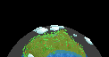

The ai.planet team
CREATOR
David Kerr
DEVELOPERS
David Kerr,
Aaron Hochwimmer,
Dushan Tcholich , Dennis Murczak
CONTRIBUTIONS
Eric Grange,
Dennis Murczak, Kaufmann Thorsten,
Dan Bartlett,
Nik,
Ivan Lee Herring,
Jeff Yoshimi,
Matt Snelling,
Johan Rabie,
Stuart Gooding,
Martin Kirsch,
Jason Lanford,
Phil Scadden,
Mattias Fagerlund,
Michael Pokoyovyy,
Shiva Danis,
Safak Cinar,
Matt Snelling,
Jarad Hansen,
Tom Barbalet,
Dennis Murczak,
Ian Badcoe
THANKS
Jesse Jenkens,
Russ Paddington,
Clayton Bakke,
Reid Bianco,
Randy Beaton,
Mike Poulin,
Harshdeep Singh,
Sam Kliman,
Gordon Cochrane,
Michael Zeilfelder,
Joen Joensen,
Chris Kardelis,
Mom and Dad,
Psylocibe Cubensis,
Alice Dee
And everyones computer that this was tested on!
The ai.planet documentation team
IDEA AND CREATOR
Dennis MurczakADDITIONAL WRITING
David Kerr
Contributing and Development
You don't have to stop here. Using ai.planet is just step
one. You can also choose to develop with ai.planet. Since this is an
OpenSource project, anyone can add new creatures, as Aaron Hochwimmer from New
Zealand did with the Duck, or you can add new features, as Dushan Tcholich from
Serbia did with DNA. You can write about ai.planet, as Dennis Murczak has
done. Many others have tested, fixed, and visually enhanced this program.
Your imagination is your limit!
About this Document
- The current version of this manual is 0.99.R3
- This manual was created by Dennis Murczak
Revision History
09/30/2003: 0.99.R3 - Dennis Murczak
- Added revision history and editing guidelines
- Made link colors more consistent
09/29/2003: inofficial - David Kerr
- Minor fixes in the team page
09/29/2003: 0.99.R2 - David Kerr
- Added a paragraph to the introduction page
- Added keyboard and mouse controls to the interface page
- Additions to the team page
09/28/2003: 0.99.R1 - Dennis Murczak
Editing Guidelines
Don't use a WYSIWYG editor to edit this document. They tend to mess around with the
code. Edit the HTML code directly, using a program like Windows Notepad, 1st Page
2000 or Arachnophilia. Keep the code structured, with tabstops and blank lines to
separate the logical parts of the page layout. If you insert pictures, tables or
the like, test the robustness of the layout in different screen resolutions and
window sizes.
Please use PNG graphics whenever possible. A good freeware viewer/converter
with great resizing and PNG saving quality is
IrfanView.
Version numbering scheme: For every major edit you made to the manual, increase the
".R" release number by one. If migrating the manual to another ai.planet version,
increase the main version number (same as ai.planet version) and reset the release
number to 1. Example: 0.98.R4 -> 0.99.R1
Also, don't forget to record your changes on this page under "Revision History"
and "About this Document" so we don't get confused about who did what.
Back to Start
